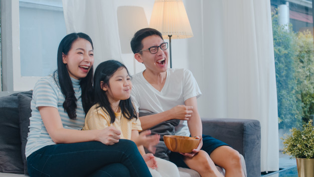

Bunda, Ini Loh 3 Manfaat Menonton Film Bersama Buah Hati
By : Admin
Tanggal : 19-Desember-2019
Menonton film merupakan salah satu aktivitas yang menyenangkan loh Bunda. Akan jauh lebih menyenangkan jika Bunda
menyaksikannya bersama sang buah hati. Bukan hanya bersama buah hati, namun Bunda juga dapat meluangkan waktu untuk
menonton bersama semua anggota keluarga. Jika Bunda belum pernah menonton bersama sang buah hati, mungkin saat ini
adalah waktu yang tepat untuk melakukannya. Bukan hanya itu, menonton film juga memiliki beberapa manfaat lho, Bun.
Penasaran? Yuk disimak informasi berikut!
Belajar Serta Memperkaya Bahasa
Dengan menonton film, Bunda bisa memberikan kesempatan untuk sang buah hati untuk belajar dan memperkaya bahasa dan kosa
katanya lebih banyak lagi. Si kecil dapat mengetahui serta belajar kosa kata baru, mengucap, merangkai, hingga memaknai
kata yang dikeluarkan. Semua itu tentu saja dapat memperkaya ketrampilan dan kemampuan si kecil untuk berbahasa. Bukan
hanya bahasa Indonesia namun si kecil dapat belajar bahasa asing seperti bahasa inggris. Bunda bisa menonton film kartun,
petualangan, belajar abjad berbahasa inggris dengan terjemahan bersama si kecil untuk membantunya.
Melatih Berpikir Kritis
Setelah film usai, Bunda bisa memberikan kesempatak kepada si kecil untuk menceritakan kembali isi film tersebut. Minta si
kecil untuk menggambarkan perasaan serta apa saja pesan yang disampaikan film tersebut. Mungkin dari sisi tokoh, atau bahkan
konfilik yang terjadi pada film. Dengan begitu si kecil akan belajar mengeksplorasi dan berdiskusi bersama Bunda maupun keluarga.
Hal tersebut dapat memancing sisi kritis dalam dirinya. Jika Bunda dan keluarga mengajari dan melakukan sesi tersebut dengan benar
maka si kecil akan tumbuh menjadi buah hati yang kritis akan setiap hal.
Meningkatkan Rasa Percaya Diri
Si Buah hati yang dikelilingi oleh anggota keluarga dapat memberikannya rasa aman dan kepercayaan diri yang dibutuhkan.
Si kecil akan terpicu untuk lebih mengeksplorasi dirinya tanpa perlu takut gagal. Dengan menonton film bersama Bunda dan
keluarga, buah hati akan menemukan waktu untuk berbincang tentang film hingga kehidupannya. Sang buah hati akan lebih terbuka
dan kepercayaannya kepada keluarga yang lain akan meningkat. Nah, jadi kapan nih Bunda akan mengajak Si Kecil untuk menonton
film bersama? Saat menonton film pasti butuh camilan dong . Oleh karena itu akan lebih baik Bunda menyiapkan makanan yang bisa
mengganjal perut si kecil seperti Lapis Malang.